| C | A | L | I | S | ||
| T | H | E | N | I | C | S |
| V-Sit | One Arm Handstand | One Arm Pull Up |
Calisthenics is a form of training that is focused on using your body weight alongside the gravity, angle, and position in space. It is a perfect type of exercises for beginners and for those who fears being looked down by people in public training places such as a gym. The wide variety of exercises can be performed anywhere as long as you have your body and mind together focused with the help of discipline. Starting from the basic exercises such as push ups and planks up to advanced exercises such as planche push ups and front lever pull ups. Moreover, calisthenics train the force generated by the body relative to one's body weight and aesthetics are simply the by-product of hardwork and consistency.
It started from the ancient Greece, China, and India where it was less intense and more rythmic ressembling what a movement that is now known as Yoga. However, yoga was almost exclusively taught to and practiced by the warrior class. The postures performed in ancient yoga are similar to bodyweight exercises we practice today. Calisthenics were famously used by Leonidas and his Spartan warriors to prepare for battle, the same one that the famous historical tale, comic, and movie are based on. While the comic and movie may have embellished many details, there is proof that the Spartans used bodyweight exercises to train. In fact, they referred to bodyweight exercises as “kilos sthenos”, which means “beautiful strength” in ancient Greek.
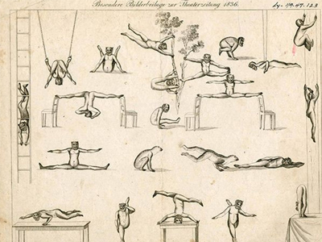The Shaolin monks of ancient China are the ideal symbol of the peaceful warrior. They meditate for hours each day, maintain a minimalist lifestyle, and vow to live by peaceful means. At the same time, Shaolin monks were highly skilled in Kung Fu, an ancient form of fighting, alongside calisthenics to train their bodies, eventually reaching a point where one-finger push-ups were effortless. A feat that is achieved through discipline and mental conditioning.
In the modern day, gymnastics is the parent of calisthenics were movements are performed through thorough conditioning. Dedication and patience are required to perfect movements or more precisely, routines, allowing them to perform and compete against other gymnasts. After a while, people started to be more interested in gymnastics paving the way for people to copy its movements and doing it on the streets. Hence, calisthenics were born and earning the titles of "Baby Gymnastics" and "Street Workout". Today, calisthenics are popularized by influencers and youtubers to help and encourage people to move and exercise in their own comfort and place.
"Movement is the song of the body"
-
Improved Biometrics. Calisthenics enhances your flexibility, balance, and posture since most exercises are compound exercises, signifying that you are using more muscles; rather than isolation exercises. Handstands, L-sits, and Planches are some exercises requiring the work of the almost whole body; from the shoulders to the waist, engaging muscles to stabalize the position of the body.
-
Mental Capacity. Calisthenics, like other disciplines, take time before seeing results. It starts from the foundations and basics, which may seem simple at first but will actually aid you to perform better when entering the intermediate to advanced skills and movements. In consequence, the mind is trained and disciplined to consistently work and aim for the skills and movements goals. Simultaneously, the movement of the body allows you to be more energetic and alive therefore, rendering you more confident on yourself.
-
Aesthetics. As a type of exercise and training, Calisthenics also sculpt your body to be more muscular and attractive. It may not be the same as a bodybuilders' but it forms a lean, muscular, and athletic body; which has a capability to do things that a bodybuilder cannot.
-
Relative Strength. As the body adapts, the strength generated by the muscles becomes more reinforced allowing one perform skills and movements that are difficult and complex to do. Calisthenics simply condition the body to be prepared rendering one's strength progressive and robust.
Calisthenics is not just simply exercising and training for the betterment of the self, but it is also for skills and movements that make you different and creative. Defy all odds and restrictions of this world by aiming, working, and achieving skills.
|
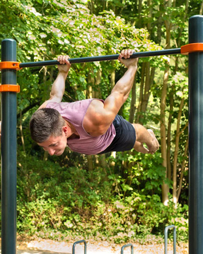
Back Lever |
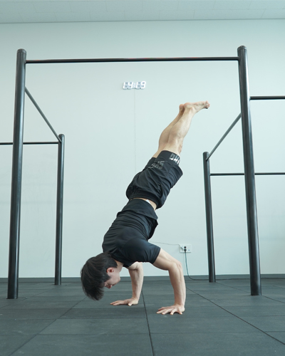
Handstand Push Up |
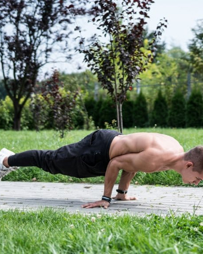
Elbow Lever |
|
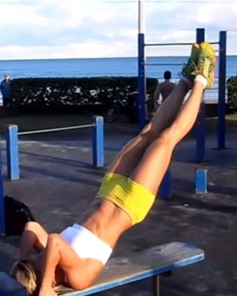
Dragon Flag |
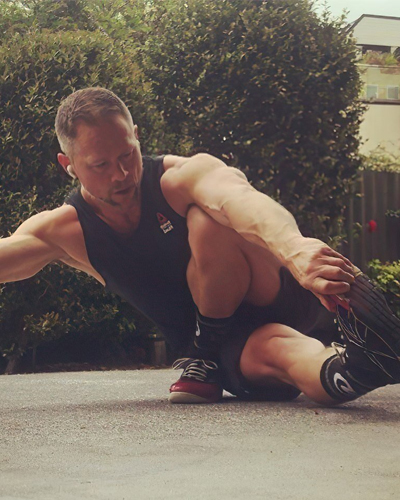
Dragon Squat |
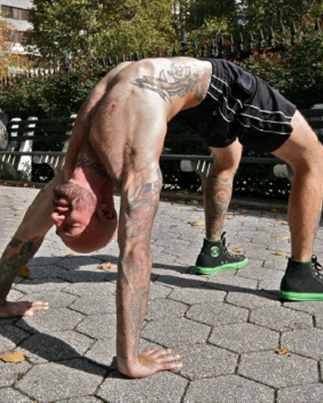
Bridge |
|
My Calisthenics Journey
During my senior high school years, in 2019, I had nothing to do due to pandemic and I saw people on YouTube doing home workouts with simple push ups, sit ups, and planking. I was very skinny that time so I told myself, "Why not?". So, I started doing basic exercises to get used to the motions and it was a pain and torment. However, after 2 months, I saw a difference in stamina and energy which I found interesting and amazing, which became my motivation to continue for more. |
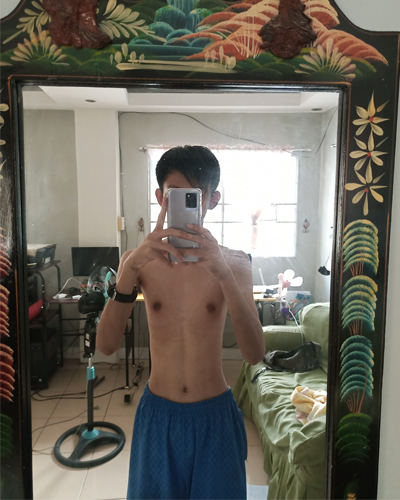
|
Unfortunately, the academic year started and we were bombarded with activites and projects therefore, I had to stop working out. I was a little disappointed on myself but I made it a goal to retake my momentum after the school year end. And so, I restarted from the beginning. I redid my basic routine to simply warm and awaken my muscles reconditioning them to aim for a greater routine and movements. My reconditioning took 2 months to complete and I was proud that my gains went back. This motivated me more to do skills that I am conditioning myself from. |

Tuck Planche |
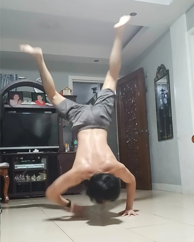
Handstand |
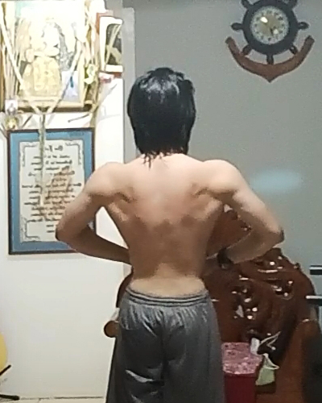
Back Progress |
From the photo above, those were my progress in my journey after 2 years. I simply try to give at the least, 2 days for my training even though it should have been 5 days since training must be continious with adequate rest in between. My current academic schedule is too tight but I have told myself that no matter what, I must find time to train and no excuses should be said. This is the discipline that I have learned from Calisthenics. Right now, I am working on my back since it is weak in terms of the difference from my front or chest. I can say that my pushing is greater than my pulling and it should be balanced inn order to perform more repetitions of an exercises and perform harder skills. Furthermore, my goal in my calisthenics journey is to achieve planche, front lever, back lever, and handstand. The first two are intermediate skills that require immense shoulder and back muscles with abdominal support since the lever, or the length of the body, must be parallel to the ground through push or pulling from a certain angle. The same goes with the back lever but lesser power is required. The handstand is an easy feat for me but my fear of being upside down hinders me from performing and perfecting the exercise itself. Despite all that, I continue to defeat my fears and continue to acheive the first three skills.
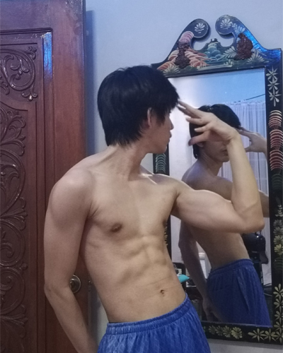Currently, my aesthetic looks ressemble to the photo on the right. Weighing in 60 kgs, plus or minus 1, able to do 20 push ups, 12 pull ups, 10 dips, 2 mins. of planking, 1 min. dead hang, and more. It is nothing compared to others but when I look back and see my old self, I think that I have conquered myself and is currently aiming to climb higher on the mountain. Saying no excuses and always self-disciplining to achieve my physical goals and also attain a better health, although that would also be ironic since academic schedule is too harsh to do so.
In conclusion, calisthenics for me is my way to relieve stress, find ways to move, make my body feel alive, a sport to perform, a training or a lesson that improves the mind and the body, and a barrier to surpass my limits and attain movements that the body can do. Sculpting the body to a lean chiseled look alongside improving the flow in the system and strenghtening the mind. Lastly, calisthenics is not just a hobby, but an art.